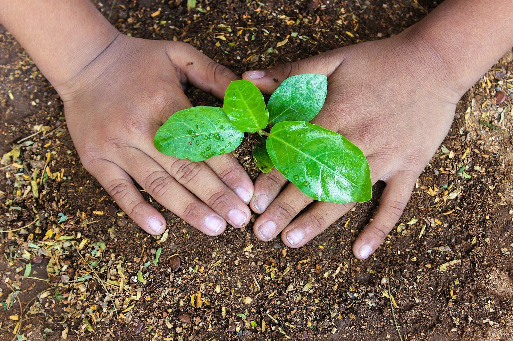
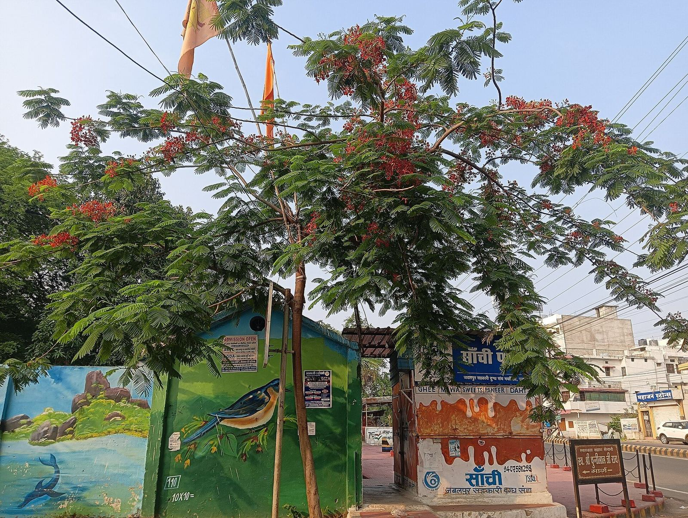
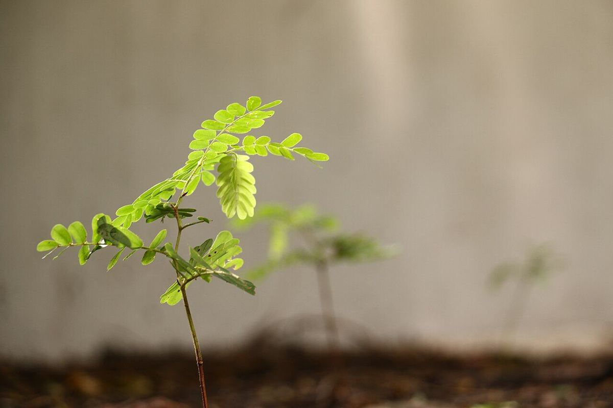
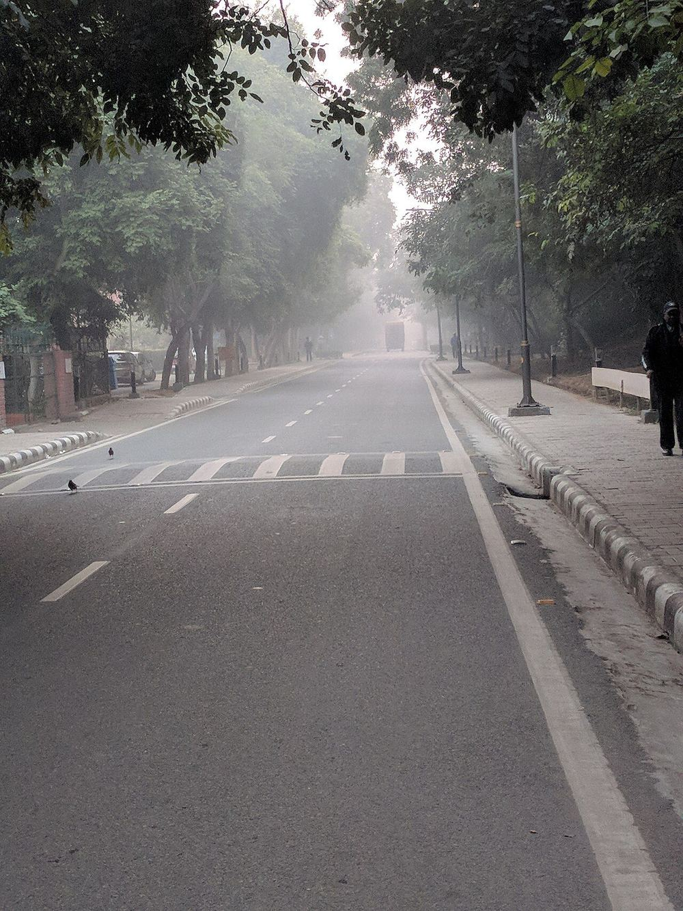
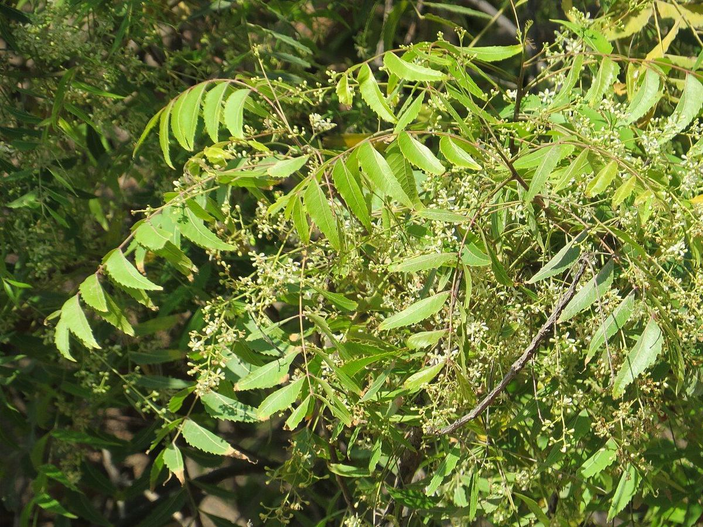
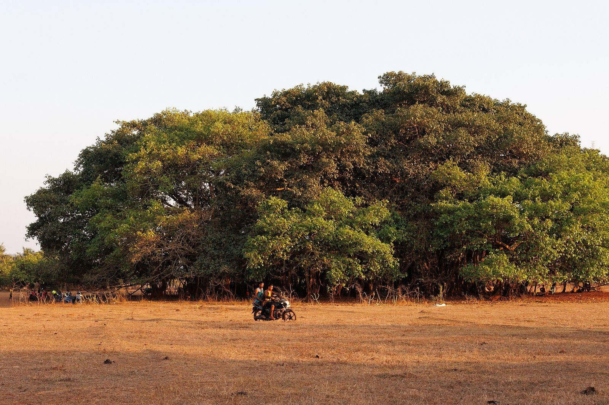
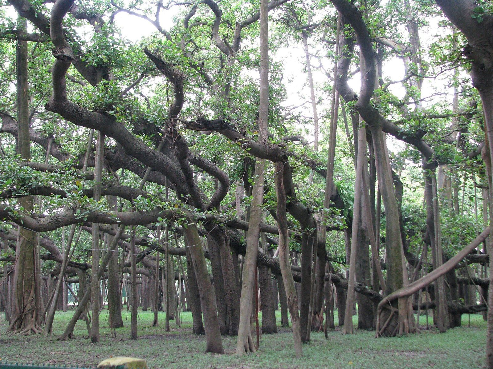

PedMitra is a free map of trees across India. Plant one, water it, or just check on a tree near you — whatever it takes to keep it alive. You don’t have to plant anything: a tree that already stands nearby just needs someone to come back for it.
Free for everyone. No organisation, no approval, no fee — ever.
A registration number is permanent. A living tree is not.
India plants millions of trees every year, in drives and campaigns — and most of them die. Not because planting is hard, but because once the day ends and the photos are taken, nobody comes back to water them. PedMitra exists to fix that one thing: to make sure a planted tree is looked after until it can stand on its own. Here is what happens to a hundred saplings, left alone, in their first year.
"A tree survives because somebody living nearby decided it was theirs to look after. That person is almost never the one who planted it."
The idea PedMitra is built on
Planting day — the easy halfCamera opens, GPS is caught while you shoot, pick the species. Twelve seconds.
Permanent, never reused — not even if the tree dies. It records the moment your tree joined the registry.
Anyone nearby sees it's dry, walks over, waters it, logs it. No permission needed. You'll never meet.
Move around it like any other map. Tap a tree and you get its photo, its planter, and the last time anybody gave it water.
These are real trees, on real streets, that nobody has come back for.
That table is the argument of the whole app, written as a number.
Not a certificate from an authority — nobody here is an authority. Just the facts about your tree, on a card you can send to anyone.
Then challenge three people. When they plant, their trees join yours on the map.
No. No invitation, no approval. If you have an email, you can register a tree in two minutes.
No. Mark it as a home tree and it never appears on the map, in anybody's list, or anywhere in our data. Only you can see it. It still gets a number and still counts.
It records how many trees existed when yours joined. Tree #1,247 was the 1,247th ever registered. Permanent, and never reused — not even if the tree dies.
Photos are taken live in the app, never uploaded. The same tree can’t be registered twice on the same spot. And every entry is tied to a verified account, so a bad actor can be blocked.






Photos from Wikimedia Commons: Robbieross123 (CC BY-SA 4.0), Kaushlendrapathe (CC BY 4.0), Saishna96 (CC BY-SA 4.0), Ramesh Lalwani (CC BY 2.0), Vinayaraj (CC BY-SA 4.0), Vyacheslav Argenberg (CC BY 4.0), McKay Savage (CC BY 2.0).
Two minutes and a bucket. We can tell you where it is.
Open the map